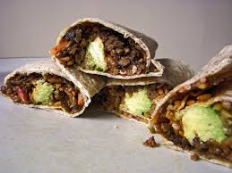

Back to Home
Delicious Instant Pot Bean and Cheese Burritos

By: Me
DESCRIPTION GOES HERE
Recipe adapted from Kay Chun's Bean and Cheese Burritos
Makes 6 burritos
Ingredients
For pressure cooked beans
- 1/2 cup dried pinto beans
- Garlic clove, crushed
- Bay leaf
- 1/2 teaspoon cumin seeds
To make refried beans
- 1/2 cup finely chopped yellow onion
- 1/2 cup finely copped green bell pepper
- Salt and pepper
- 2 garlic cloves, minced
- 1/2 store-bought pico de gallo or salsa
- 1/4 teaspoon smoked paprika
Finishing the burritos
- 6 (9-to 10-inch) flour tortillas
- 1.5 to 2 cups shredded sharp Cheddar
- Sour cream, hot sauce and avocado for serving
Steps
- Step One
- Step Two
- Step Three